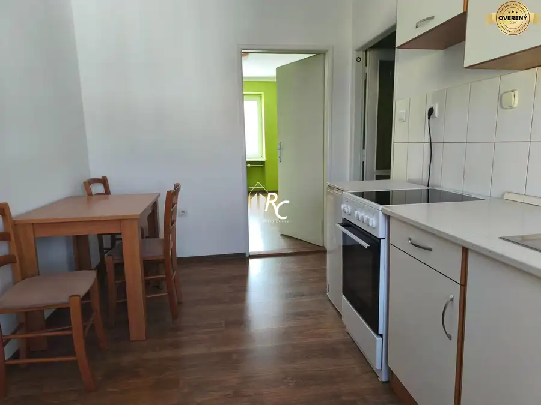
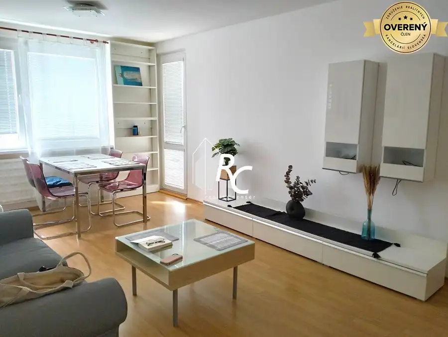
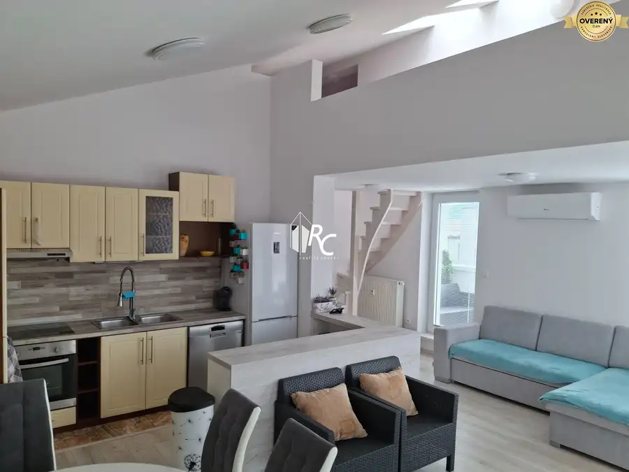
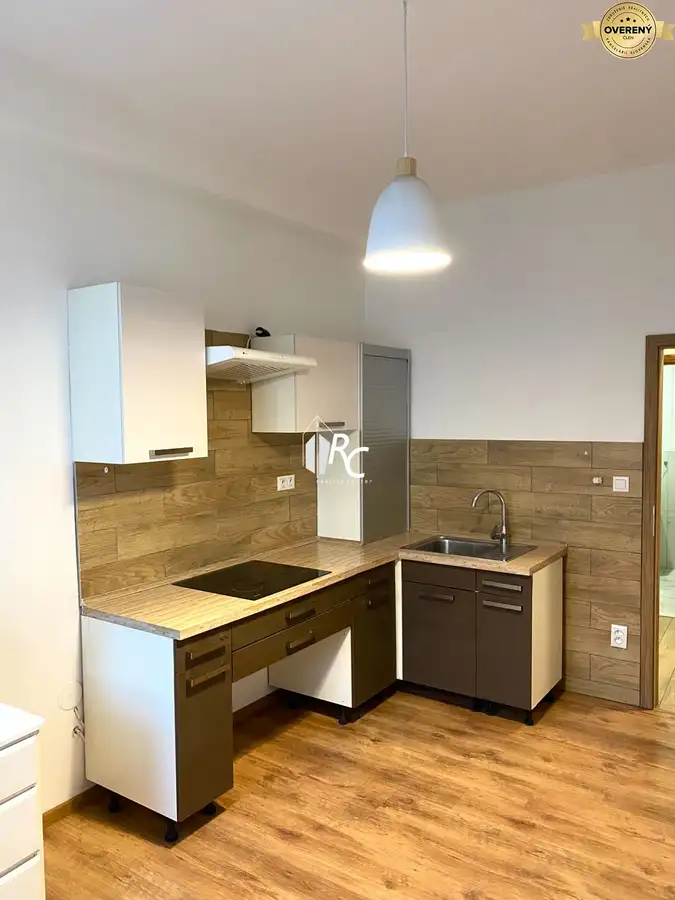

Aktuálna ponuka
8 nehnuteľností, predovšetkým byty, rodinné domy, pozemky. Každá má vlastnú stránku s fotkami, popisom a mapou.
Prezrieť ponuku
Ľubomír ChribikRealitný maklér
Realitný maklér · Reality Center, s.r.o.
Predaj a prenájom nehnuteľností · Martin, Trebostovo, Harmanec

 Rodinné domy10
399 000 €Rozľahlý rodinný dom v lokalite Stráne
Martin
6-izbový243 m²
Tento rodinný dom je umiestnený takmer na konci v kľudnej uličke na pozemku mierne sa zvažujúcom ku potoku, ktorý je na hranici pozemku, čo vytvára…
Byt10
120 000 €Dvojbyt/ 4-5 izbový veľký byt
Harmanec
4+1127.17 m²3. podlažie
Ide o 2 bytové jednotky s 2 kuchyňami a spoločným WC a kúpeľňou, takže je to vhodné na používanie jednou väčšou rodinou, pričom, keď by sa urobila…
Nebytové priestory10
Cena dohodouAdministratívne, výrobné a skladové priestory na prenájom
Martin
1033 m²
Na prenájom sú k dispozícii priestory v budove na 1. a2.nadzemnom podlaží. Z toho 223m2 je po 5€/m2, kde sú už opravené priestory a vymenené okná.…
Rodinné domy10
399 000 €Rozľahlý rodinný dom v lokalite Stráne
Martin
6-izbový243 m²
Tento rodinný dom je umiestnený takmer na konci v kľudnej uličke na pozemku mierne sa zvažujúcom ku potoku, ktorý je na hranici pozemku, čo vytvára…
Byt10
120 000 €Dvojbyt/ 4-5 izbový veľký byt
Harmanec
4+1127.17 m²3. podlažie
Ide o 2 bytové jednotky s 2 kuchyňami a spoločným WC a kúpeľňou, takže je to vhodné na používanie jednou väčšou rodinou, pričom, keď by sa urobila…
Nebytové priestory10
Cena dohodouAdministratívne, výrobné a skladové priestory na prenájom
Martin
1033 m²
Na prenájom sú k dispozícii priestory v budove na 1. a2.nadzemnom podlaží. Z toho 223m2 je po 5€/m2, kde sú už opravené priestory a vymenené okná.…

Byt10 Cena dohodouPrenájom 2i bytu v Štúrovej štvrti, centrum Martin 2-izbový67 m²3. podlažie Máme do prenájmu pre 2 osoby , bez detí, zvierat a nie študentov 2 izbový byt v centre mesta, v Štúrovej štvrti, tesne pri pešej zóne. Ide o byt na…
Byt9 Cena dohodouPrenájom 3-izbového bytu, Martin - Ľadoveň Martin 3-izbový69.05 m²6. podlažie Ponúkame na prenájom 3-izbový byt v Martine, v peknej a tichšej časti Ľadovne. Byt sa nachádza na 6./8. poschodí v zateplenej bytovke s výťahom.…
BytRezervované10 210 000 €Priestranný 4izbový byt Nový Martin Martin 4-izbový111.76 m²2. podlažie Priestranný byt pozostáva z 3 obytných miestností a 1 galérie, ktorá vytvára priestor pre 4.miestnosť, vhodnú na pracovňu alebo študentskú izbu,…
BytRezervované8 112 000 €Priestranný 2-izbový byt, Martin - Jahodníky Martin 2-izbový44.36 m²1. podlažie Ponúkame Vám na predaj pekne zrekonštruovaný dvojizbový byt, nachádzajúci sa v žiadanej lokalite Martin - Jahodníky. Výhodou sú nízke mesačné náklady… Rodinné domyRezervované10
359 000 €Priestranný dom v Trebostove
Trebostovo
5-izbový295 m²
Naša realitná kancelária Vám ponúka nadštandardný rodinný dom postavený s použitím kvalitných materiálov, skolaudovaný v 11/2005. Dom má dve…
Rodinné domyRezervované10
359 000 €Priestranný dom v Trebostove
Trebostovo
5-izbový295 m²
Naša realitná kancelária Vám ponúka nadštandardný rodinný dom postavený s použitím kvalitných materiálov, skolaudovaný v 11/2005. Dom má dve…
Tomuto výberu zatiaľ nezodpovedá žiadna ponuka. Napíšte mi, čo hľadáte.
Volám sa Ing. Ľubomír Chribik. Som realitný maklér kancelárie Reality Center, s.r.o. a pôsobím predovšetkým v lokalitách Martin, Trebostovo, Harmanec a Brieštie (Žilinský kraj).
8 nehnuteľností, predovšetkým byty, rodinné domy, pozemky. Každá má vlastnú stránku s fotkami, popisom a mapou.
Prezrieť ponukuMartin, Trebostovo, Harmanec, Brieštie a okolie. Ponuku si môžete prezrieť podľa lokality.
Nehnuteľnosti v lokaliteOdhad trhovej ceny, príprava prezentácie, obhliadky, zmluvy a odovzdanie nehnuteľnosti.
Dohodnúť stretnutieNa čo sa pýtate najčastejšie, skôr než sa stretneme.
Odhad trhovej ceny vychádza z aktuálnych ponúk a predajov v lokalite, nie z cenníkových tabuliek. Podmienky Vám poviem pri prvom telefonáte.
Najprv obhliadka a odhad ceny, potom príprava prezentácie (fotografie, popis, inzercia), obhliadky so záujemcami, rezervačná zmluva, kúpna zmluva, návrh na vklad do katastra a odovzdanie nehnuteľnosti. O každom kroku viete vopred.
Najrýchlejšie cez WhatsApp alebo telefón. Termín stretnutia alebo obhliadky dohodneme podľa Vás.